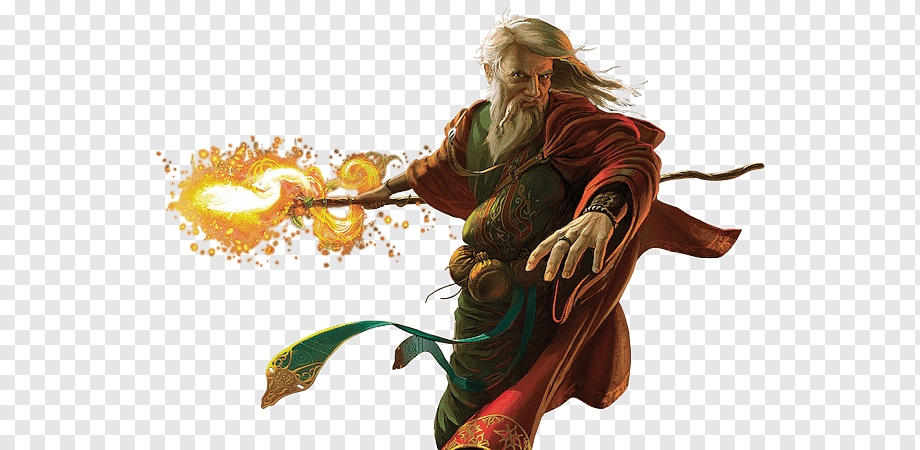

Especialista em Magia Elemental com foco em Poder Mágico, Inteligência Avançada e alta Regeneração de Mana.
Nascido nas ruínas esquecidas da cidade de prata, Kaelen decifrou tomos proibidos antes mesmo de empunhar seu primeiro cajado.
"O conhecimento é a chama que consome a ignorância."
Bolsa de Mana
- Porção de Mana Maior
- Pergaminho de Teleporte
- Ração de viagem
- Antídoto
Hierarquia de Raridade
- Comum
- Raro
- Épico
- Lendário